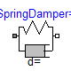
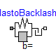
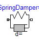
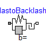


 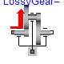
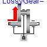


 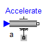
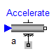
 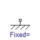
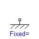
 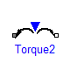
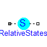
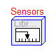
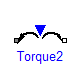
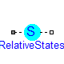
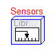
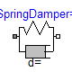
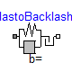
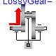
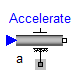
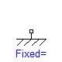
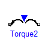
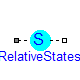
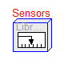
This package contains components to model 1-dimensional rotational mechanical systems, including different types of gearboxes, shafts with inertia, external torques, spring/damper elements, frictional elements, backlash, elements to measure angle, angular velocity, angular acceleration and the cut-torque of a flange. In sublibrary Examples several examples are present to demonstrate the usage of the elements. Just open the corresponding example model and simulate the model according to the provided description.
A unique feature of this library is the component-oriented modeling of Coulomb friction elements, such as friction in bearings, clutches, brakes, and gear efficiency. Even (dynamically) coupled friction elements, e.g., as in automatic gearboxes, can be handeled without introducing stiffness which leads to fast simulations. The underlying theory is new and is based on the solution of mixed continuous/discrete systems of equations, i.e., equations where the unknowns are of type Real, Integer or Boolean. Provided appropriate numerical algorithms for the solution of such types of systems are available in the simulation tool, the simulation of (dynamically) coupled friction elements of this library is efficient and reliable.

A simple example of the usage of this library is given in the figure above. This drive consists of a shaft with inertia J1=0.2 which is connected via an ideal gearbox with gear ratio=5 to a second shaft with inertia J2=5. The left shaft is driven via an external, sinusoidal torque. The filled and non-filled grey squares at the left and right side of a component represent mechanical flanges. Drawing a line between such squares means that the corresponding flanges are rigidly attached to each other. By convention in this library, the connector characterized as a filled grey square is called flange_a and placed at the left side of the component in the "design view" and the connector characterized as a non-filled grey square is called flange_b and placed at the right side of the component in the "design view". The two connectors are completely identical, with the only exception that the graphical layout is a little bit different in order to distinguish them for easier access of the connector variables. For example, J1.flange_a.tau is the cut-torque in the connector flange_a of component J1.
The components of this library can be connected together in an arbitrary way. E.g., it is possible to connect two springs or two shafts with inertia directly together, see figure below.

This package contains the following model components:
| Name | Description |
|---|---|
| Examples | Sublibrary containing example models. |
| Interfaces | Sublibrary containing interface definitions. |
| Inertia | Rotational component with inertia. |
| IdealGear | Ideal gear transforming rotational in rotational motion. |
| IdealPlanetary | Ideal standard planetary gear. |
| IdealGearR2T | Ideal gear transforming rotational in translational motion. |
| Spring | Linear spring. |
| Damper | Linear damper. |
| SpringDamper | Linear spring and linear damper in parallel connection. |
| ElastoBacklash | Linear spring, linear damper and backlash in series connection (backlash is modeled with elasticity). |
| BearingFriction | Coulomb friction in the bearings. |
| Clutch | Frictional clutch where the clutch pressure force is an input signal (= Coulomb friction between two flanges). |
| OneWayClutch | Parallel connection of free wheel and clutch |
| Brake | Frictional brake where the brake pressure force is an input signal (= Coulomb friction between flange and housing). |
| LossyGear | Gear with mesh efficiency and bearing friction (stuck/rolling possible) |
| GearEfficiency | Efficiency of a gearbox. |
| Gear | Realistic model of a gearbox (taking into account efficiency, bearing friction, elasticity, damping, backlash) |
| GearNew | Realistic model of a gearbox (taking into account efficiency, bearing friction, elasticity, damping, backlash), based on new component LossyGear |
| Position | Forced movement of a flange with a reference angle given as input signal (positive angle for positive input signal). |
| Accelerate | Forced movement of a flange with an angular acceleration given as input signal (positive acceleration for positive input signal). |
| Move | Forced movement of a flange according to an angle, speed and angular acceleration given as input signals. |
| Fixed | Fixing flange in housing at a predefined angle. |
| Torque | External torque defined as input signal which accelerates the connected flange for positive input signal. |
| RelativeStates | Definition of relative state variables |
| Sensors | Sublibrary containing ideal sensors to measure flange variables. |
A flange is described by the connector class Interfaces.Flange_a or Interfaces.Flange_b. As already noted, the two connector classes are completely identical. There is only a difference in the icons, in order to easier identify a flange variable in a diagram. Both connector classes contain the following variables:
SIunits.Angle phi "absolute rotation angle of flange"; flow SIunits.Torque tau "cut-torque in the flange";
If needed, the angular velocity w and the angular acceleration a of a flange connector can be determined by differentiation of the flange angle phi:
w = der(phi); a = der(w);
The variables of a component of this library can be accessed in the usual way. However, since most of these variables are basically elements of vectors, i.e., have a direction, the question arises how the signs of variables shall be interpreted. The basic idea is explained at hand of the following figure:

In the figure, three identical drive trains are shown. The only difference is that the gear of the middle drive train and the gear as well as the right inertia of the lower drive train are horizontally flipped with regards to the upper drive train. The signs of variables are now interpreted in the following way: Due to the 1-dimensional nature of the model, all components are basically connected together along one line (more complicated cases are discussed below). First, one has to define a positive direction of this line, called axis of rotation. In the top part of the figure this is characterized by an arrow defined as axis of rotation. The simple rule is now: If a variable of a component is positive and can be interpreted as the element of a vector (e.g. torque or angular velocity vector), the corresponding vector is directed into the positive direction of the axis of rotation. In the following figure, the right-most inertias of the figure above are displayed with the positive vector direction displayed according to this rule:
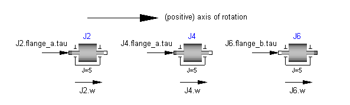
The cut-torques J2.flange_a.tau, J4.flange_a.tau, J6.flange_b.tau of the right inertias are all identical and are directed into the direction of rotation if the values are positive. Similiarily, the angular velocities J2.w, J4.w, J6.w of the right inertias are all identical and are also directed into the direction of rotation if the values are positive. Some special cases are shown in the next figure:
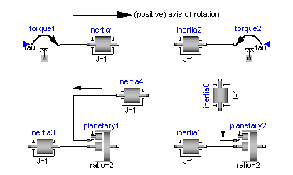
In the upper part of the figure, two variants of the connection of an external torque and an inertia are shown. In both cases, a positive signal input into the torque component accelerates the inertias inertia1, inertia2 into the positive axis of rotation, i.e., the angular accelerations inertia1.a, inertia2.a are positive and are directed along the "axis of rotation" arrow. In the lower part of the figure the connection of inertias with a planetary gear is shown. Note, that the three flanges of the planetary gearbox are located along the axis of rotation and that the axis direction determines the positive rotation along these flanges. As a result, the positive rotation for inertia4, inertia6 is as indicated with the additional grey arrows.
In this section some hints are given to define your own 1-dimensional rotational components which are compatible with the elements of this package. It is convenient to define a new component by inheritance from one of the following base classes, which are defined in sublibrary Interfaces:
| Name | Description |
|---|---|
| Rigid | Rigid connection of two rotational 1D flanges (used for elements with inertia). |
| Compliant | Compliant connection of two rotational 1D flanges (used for force laws such as a spring or a damper). |
| TwoFlanges | General connection of two rotational 1D flanges (used for gearboxes). |
| AbsoluteSensor | Measure absolute flange variables. |
| RelativeSensor | Measure relative flange variables. |
The difference between these base classes are the auxiliary variables defined in the model and the relations between the flange variables already defined in the base class. For example, in model Rigid the flanges flange_a and flange_b are rigidly connected, i.e., flange_a.phi = flange_b.phi, whereas in model Compliant the cut-torques are the same, i.e., flange_a.tau + flange_b.tau = 0.
The equations of a mechanical component are vector equations, i.e., they need to be expressed in a common coordinate system. Therefore, for a component a local axis of rotation has to be defined. All vector quantities, such as cut-torques or angular velocities have to be expressed according to this definition. Examples for such a definition are given in the following figure for an inertia component and a planetary gearbox:

As can be seen, all vectors are directed into the direction of the rotation axis. The angles in the flanges are defined correspondingly. For example, the angle sun.phi in the flange of the sun wheel of the planetary gearbox is positive, if rotated in mathematical positive direction (= counter clock wise) along the axis of rotation.
On first view, one may assume that the selected local coordinate system has an influence on the usage of the component. But this is not the case, as shown in the next figure:
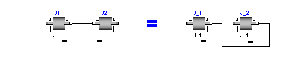
In the figure the local axes of rotation of the components are shown. The connection of two inertias in the left and in the right part of the figure are completely equivalent, i.e., the right part is just a different drawing of the left part. This is due to the fact, that by a connection, the two local coordinate systems are made identical and the (automatically) generated connection equations (= angles are identical, cut-torques sum-up to zero) are also expressed in this common coordinate system. Therefore, even if in the left figure it seems to be that the angular velocity vector of J2 goes from right to left, in reality it goes from left to right as shown in the right part of the figure, where the local coordinate systems are drawn such that they are aligned. Note, that the simple rule stated in section 4 (Sign conventions) also determines that the angular velocity of J2 in the left part of the figure is directed from left to right.
To summarize, the local coordinate system selected for a component is just necessary, in order that the equations of this component are expressed correctly. The selection of the coordinate system is arbitrary and has no influence on the usage of the component. Especially, the actual direction of, e.g., a cut-torque is most easily determined by the rule of section 4. A more strict determination by aligning coordinate systems and then using the vector direction of the local coordinate systems, often requires a re-drawing of the diagram and is therefore less convenient to use.
This library is designed in a fully object oriented way in order that components can be connected together in every meaningful combination (e.g. direct connection of two springs or two inertias). As a consequence, most models lead to a system of differential-algebraic equations of index 3 (= constraint equations have to be differentiated twice in order to arrive at a state space representation) and the Modelica translator or the simulator has to cope with this system representation. According to our present knowledge, this requires that the Modelica translator is able to symbolically differentiate equations (otherwise it is e.g. not possible to provide consistent initial conditions; even if consistent initial conditions are present, most numerical DAE integrators can cope at most with index 2 DAEs).
The elements of this library can be connected together in an arbitrary way. However, difficulties may occur, if the elements which can lock the relative motion between two flanges are connected rigidly together such that essentially the same relative motion can be locked. The reason is that the cut-torque in the locked phase is not uniquely defined if the elements are locked at the same time instant (i.e., there does not exist a unique solution) and some simulation systems may not be able to handle this situation, since this leads to a singularity during simulation. Currently, this type of problem can occur with the Coulomb friction elements BearingFriction, Clutch, Brake, LossyGear when the elements become stuck: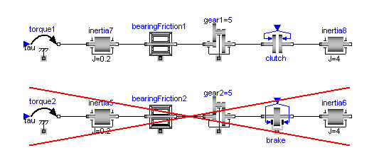
In the figure above two typical situations are shown: In the upper part of the figure, the series connection of rigidly attached BearingFriction and Clutch components are shown. This does not hurt, because the BearingFriction element can lock the relative motion between the element and the housing, whereas the clutch element can lock the relative motion between the two connected flanges. Contrary, the drive train in the lower part of the figure may rise to simulation problems, because the BearingFriction element and the Brake element can lock the relative motion between a flange and the housing and these flanges are rigidly connected together, i.e., essentially the same relative motion can be locked. These difficulties may be solved by either introducing a compliance between these flanges or by combining the BearingFriction and Brake element into one component and resolving the ambiguity of the frictional torque in the stuck mode. A tool may handle this situation also automatically, by picking one solution of the infinitely many, e.g., the one where the difference to the value of the previous time instant is as small as possible.
The following figure shows examples of components equipped with a bearing flange (framed flange in the lower center), which can be used to fix components on the ground or on other rotating elements or to combine them with force elements. If the bearing flange is not connected, the components are assumed to be mounted on the ground. Otherwise, the bearing connector offers the possibility to consider, e.g., gearboxes mounted on the ground via spring-damper-systems (cf. example ElasticBearing). Independently, these components provide a variable tau_support stating the support torque exerted on the bearing.

In general, it is not necessary to connect the bearing flange with a fixation, i.e., the two implementations in the following figure give identical results.

Release Notes:
Copyright © 1999-2003, 2000-2003, Modelica Association and DLR.
The Modelica package is free software; it can be redistributed and/or modified under the terms of the Modelica license, see the license conditions and the accompanying disclaimer in the documentation of package Modelica in file "Modelica/package.mo".
| Name | Description |
|---|---|
| Examples | Demonstration examples of the components of this package |
| Interfaces | Connectors and partial models for 1D rotational mechanical components |
| Inertia | 1D-rotational component with inertia |
| IdealGear | Ideal gear without inertia |
| IdealPlanetary | Ideal planetary gear box |
| IdealGearR2T | Gearbox transforming rotational into translational motion |
| Spring | Linear 1D rotational spring |
| Damper | Linear 1D rotational damper |
| SpringDamper | Linear 1D rotational spring and damper in parallel |
| ElastoBacklash | Backlash connected in series to linear spring and damper (backlash is modeled with elasticity) |
| BearingFriction | Coulomb friction in bearings |
| Clutch | Clutch based on Coulomb friction |
| OneWayClutch | Series connection of freewheel and clutch |
| Brake | Brake based on Coulomb friction |
| LossyGear | Gear with mesh efficiency and bearing friction (stuck/rolling possible) |
| GearEfficiency | Obsolete component (use model LossyGear instead) |
| Gear | Realistic model of a gearbox |
| Gear2 | Realistic model of a gearbox (based on LossyGear) |
| Position | Forced movement of a flange according to a reference angle signal |
| Speed | Forced movement of a flange according to a reference angular velocity signal |
| Accelerate | Forced movement of a flange according to an acceleration signal |
| Move | Forced movement of a flange according to an angle, speed and angular acceleration signal |
| Fixed | Flange fixed in housing at a given angle |
| Torque | Input signal acting as external torque on a flange |
| Torque2 | Input signal acting as torque on two flanges |
| RelativeStates | Definition of relative state variables |
| Sensors | Sensors to measure variables in 1D rotational mechanical components |
Modelica.Mechanics.Rotational.Inertia

Rotational component with inertia and two rigidly connected flanges.
Release Notes:
| Name | Default | Description |
|---|---|---|
| J | 1 | Moment of inertia [kg.m2] |
model Inertia "1D-rotational component with inertia" extends Interfaces.Rigid; parameter SI.Inertia J = 1 "Moment of inertia"; SI.AngularVelocity w "Absolute angular velocity of component"; SI.AngularAcceleration a "Absolute angular acceleration of component"; equation w = der(phi); a = der(w); J*a = flange_a.tau + flange_b.tau; end Inertia;
Modelica.Mechanics.Rotational.IdealGear

This element characterices any type of gear box which is fixed in the ground and which has one driving shaft and one driven shaft. The gear is ideal, i.e., it does not have inertia, elasticity, damping or backlash. If these effects have to be considered, the gear has to be connected to other elements in an appropriate way.
Release Notes:
| Name | Default | Description |
|---|---|---|
| ratio | 1 | Transmission ratio (flange_a.phi/flange_b.phi) |
model IdealGear "Ideal gear without inertia" extends Interfaces.TwoFlangesAndBearing; parameter Real ratio=1 "Transmission ratio (flange_a.phi/flange_b.phi)"; equation phi_a = ratio*phi_b; 0 = ratio*flange_a.tau + flange_b.tau; end IdealGear;
Modelica.Mechanics.Rotational.IdealPlanetary

The IdealPlanetary gear box is an ideal gear without inertia, elasticity, damping or backlash consisting of an inner sun wheel, an outer ring wheel and a planet wheel located between sun and ring wheel. The bearing of the planet wheel shaft is fixed in the planet carrier. The component can be connected to other elements at the sun, ring and/or carrier flanges. It is not possible to connect to the planet wheel. If inertia shall not be neglected, the sun, ring and carrier inertias can be easily added by attaching inertias (= model Inertia) to the corresponding connectors. The inertias of the planet wheels are always neglected.
The icon of the planetary gear signals that the sun and carrier flanges are on the left side and the ring flange is on the right side of the gear box. However, this component is generic and is valid independantly how the flanges are actually placed (e.g. sun wheel may be placed on the right side instead on the left side in reality).
The ideal planetary gearbox is uniquely defined by the ratio of the number of ring teeth zr with respect to the number of sun teeth zs. For example, if there are 100 ring teeth and 50 sun teeth then ratio = zr/zs = 2. The number of planet teeth zp has to fulfill the following relationship:
zp := (zr - zs) / 2
Therefore, in the above example zp = 25 is required.
According to the overall convention, the positive direction of all vectors, especially the absolute angular velocities and cut-torques in the flanges, are along the axis vector displayed in the icon.
Release Notes:
| Name | Default | Description |
|---|---|---|
| ratio | 100/50 | number of ring_teeth/sun_teeth (e.g. ratio=100/50) |
model IdealPlanetary "Ideal planetary gear box"
parameter Real ratio=100/50
"number of ring_teeth/sun_teeth (e.g. ratio=100/50)";
// kinematic relationship
Interfaces.Flange_a sun "sun flange (flange axis directed INTO cut plane)";
Interfaces.Flange_a carrier
"carrier flange (flange axis directed INTO cut plane)";
Interfaces.Flange_b ring
"ring flange (flange axis directed OUT OF cut plane)";
equation
(1 + ratio)*carrier.phi = sun.phi + ratio*ring.phi;
// torque balance (no inertias)
ring.tau = ratio*sun.tau;
carrier.tau = -(1 + ratio)*sun.tau;
end IdealPlanetary;
Modelica.Mechanics.Rotational.IdealGearR2T

Release Notes:
| Name | Default | Description |
|---|---|---|
| ratio | 1 | transmission ratio (flange_a.phi/flange_b.s) [rad/m] |
model IdealGearR2T
"Gearbox transforming rotational into translational motion"
parameter Real ratio(final unit="rad/m") = 1
"transmission ratio (flange_a.phi/flange_b.s)";
SI.Torque tau_support;
SI.Force f_support;
Interfaces.Flange_a flange_a;
Modelica.Mechanics.Translational.Interfaces.Flange_b flange_b;
Interfaces.Flange_a bearingR;
Translational.Interfaces.Flange_a bearingT;
equation
(flange_a.phi - bearingR.phi) = ratio*(flange_b.s - bearingT.s);
0 = ratio*flange_a.tau + flange_b.f;
0 = flange_a.tau + tau_support;
0 = flange_b.f + f_support;
if cardinality(bearingR) == 0 then
bearingR.phi = 0;
else
bearingR.tau = tau_support;
end if;
if cardinality(bearingT) == 0 then
bearingT.s = 0;
else
bearingT.f = f_support;
end if;
end IdealGearR2T;
Modelica.Mechanics.Rotational.Spring

A linear 1D rotational spring. The component can be connected either between two inertias/gears to describe the shaft elasticity, or between a inertia/gear and the housing (component Fixed), to describe a coupling of the element with the housing via a spring.
Release Notes:
| Name | Default | Description |
|---|---|---|
| c | Spring constant [N.m/rad] | |
| phi_rel0 | 0 | Unstretched spring angle [rad] |
model Spring "Linear 1D rotational spring" extends Interfaces.Compliant; parameter Real c(final unit="N.m/rad", final min=0) "Spring constant"; parameter SI.Angle phi_rel0 = 0 "Unstretched spring angle"; equation tau = c*(phi_rel - phi_rel0); end Spring;
Modelica.Mechanics.Rotational.Damper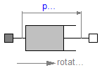
Linear, velocity dependent damper element. It can be either connected between an inertia or gear and the housing (component Fixed), or between two inertia/gear elements.
Release Notes:
| Name | Default | Description |
|---|---|---|
| d | 0 | Damping constant [N.m.s/rad] |
model Damper "Linear 1D rotational damper"
extends Interfaces.Compliant;
parameter Real d(
final unit="N.m.s/rad",
final min=0) = 0 "Damping constant";
SI.AngularVelocity w_rel
"Relative angular velocity between flange_b and flange_a";
equation
w_rel = der(phi_rel);
tau = d*w_rel;
end Damper;
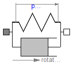
A spring and damper element connected in parallel. The component can be connected either between two inertias/gears to describe the shaft elasticity and damping, or between an inertia/gear and the housing (component Fixed), to describe a coupling of the element with the housing via a spring/damper.
Release Notes:
| Name | Default | Description |
|---|---|---|
| c | Spring constant [N.m/rad] | |
| phi_rel0 | 0 | Unstretched spring angle [rad] |
| d | 0 | Damping constant [N.m.s/rad] |
model SpringDamper
"Linear 1D rotational spring and damper in parallel"
extends Interfaces.Compliant;
parameter Real c(final unit="N.m/rad", final min=0) "Spring constant";
parameter SI.Angle phi_rel0 = 0 "Unstretched spring angle";
parameter Real d(
final unit="N.m.s/rad",
final min=0) = 0 "Damping constant";
SI.AngularVelocity w_rel
"Relative angular velocity between flange_b and flange_a";
equation
w_rel = der(phi_rel);
tau = c*(phi_rel - phi_rel0) + d*w_rel;
end SpringDamper;
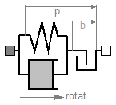
This element consists of a backlash element connected in series to a spring and damper element which are connected in parallel. The spring constant shall be non-zero, otherwise the component cannot be used.
In combination with components IdealGear, the ElastoBacklash model can be used to model a gear box with backlash, elasticity and damping.
Release Notes:
| Name | Default | Description |
|---|---|---|
| b | 0 | Total backlash [rad] |
| c | 1.e5 | Spring constant (c > 0 required) [N.m/rad] |
| phi_rel0 | 0 | Unstretched spring angle [rad] |
| d | 0 | Damping constant [N.m.s/rad] |
model ElastoBacklash
"Backlash connected in series to linear spring and damper (backlash is modeled with elasticity)"
extends Interfaces.Compliant;
parameter SI.Angle b( final min=0) = 0 "Total backlash";
parameter Real c(
final unit="N.m/rad",
final min=Modelica.Constants.small) = 1.e5
"Spring constant (c > 0 required)";
parameter SI.Angle phi_rel0 = 0 "Unstretched spring angle";
parameter Real d(
final unit="N.m.s/rad",
final min=0) = 0 "Damping constant";
SI.AngularVelocity w_rel
"Relative angular velocity between flange_b and flange_a";
protected
SI.Angle b2=
b/2;
// A minimum backlash is defined in order to avoid an infinite
// number of state events if backlash b is set to zero.
constant SI.Angle b_min = 1.e-10 "minimum backlash";
equation
w_rel = der(phi_rel);
tau = if b2 > b_min then (if phi_rel > b2 then c*(phi_rel - phi_rel0 - b2)
+ d*w_rel else (if phi_rel < -b2 then c*(phi_rel - phi_rel0 + b2) + d*
w_rel else 0)) else c*(phi_rel - phi_rel0) + d*w_rel;
end ElastoBacklash;
Modelica.Mechanics.Rotational.BearingFriction

This element describes Coulomb friction in bearings, i.e., a frictional torque acting between a flange and the housing. The positive sliding friction torque "tau" has to be defined by table "tau_pos" as function of the absolute angular velocity "w". E.g.
w | tau
---+-----
0 | 0
1 | 2
2 | 5
3 | 8
gives the following table:
tau_pos = [0, 0; 1, 2; 2, 5; 3, 8];
Currently, only linear interpolation in the table is supported. Outside of the table, extrapolation through the last two table entries is used. It is assumed that the negative sliding friction force has the same characteristic with negative values. Friction is modelled in the following way:
When the absolute angular velocity "w" is not zero, the friction torque is a function of w and of a constant normal force. This dependency is defined via table tau_pos and can be determined by measurements, e.g. by driving the gear with constant velocity and measuring the needed motor torque (= friction torque).
When the absolute angular velocity becomes zero, the elements connected by the friction element become stuck, i.e., the absolute angle remains constant. In this phase the friction torque is calculated from a torque balance due to the requirement, that the absolute acceleration shall be zero. The elements begin to slide when the friction torque exceeds a threshold value, called the maximum static friction torque, computed via:
maximum_static_friction = peak * sliding_friction(w=0) (peak >= 1)
This procedure is implemented in a "clean" way by state events and leads to continuous/discrete systems of equations if friction elements are dynamically coupled which have to be solved by appropriate numerical methods. The method is described in:
More precise friction models take into account the elasticity of the material when the two elements are "stuck", as well as other effects, like hysteresis. This has the advantage that the friction element can be completely described by a differential equation without events. The drawback is that the system becomes stiff (about 10-20 times slower simulation) and that more material constants have to be supplied which requires more sophisticated identification. For more details, see the following references, especially (Armstrong and Canudas de Witt 1996):
Release Notes:
| Name | Default | Description |
|---|---|---|
| tau_pos[:, :] | [0, 1] | [w,tau] Positive sliding friction characteristic (w>=0) |
| peak | 1 | peak*tau_pos[1,2] = Maximum friction torque for w==0 |
| w_small | 1 | Relative angular velocity near to zero (see model info text) [rad/s] |
model BearingFriction "Coulomb friction in bearings "
extends Interfaces.TwoFlangesAndBearing;
parameter Real tau_pos[:, :]=[0, 1]
"[w,tau] Positive sliding friction characteristic (w>=0)";
parameter Real peak(final min=1) = 1
"peak*tau_pos[1,2] = Maximum friction torque for w==0";
extends Interfaces.FrictionBase;
SI.Angle phi;
SI.AngularVelocity w "Absolute angular velocity of flange_a and flange_b";
SI.AngularAcceleration a
"Absolute angular acceleration of flange_a and flange_b";
equation
// Constant auxiliary variables
tau0 = Modelica.Math.tempInterpol1(0, tau_pos, 2);
tau0_max = peak*tau0;
free = false;
phi = phi_a;
phi = phi_b;
// Angular velocity and angular acceleration of flanges
w = der(phi);
a = der(w);
w_relfric = w;
a_relfric = a;
// Equilibrium of torques
0 = flange_a.tau + flange_b.tau - tau;
// Friction torque
tau = if locked then sa else (if startForward then
Modelica.Math.tempInterpol1(w, tau_pos, 2) else if startBackward then -
Modelica.Math.tempInterpol1(-w, tau_pos, 2) else if pre(mode) == Forward then
Modelica.Math.tempInterpol1(w, tau_pos, 2) else -
Modelica.Math.tempInterpol1(-w, tau_pos, 2));
end BearingFriction;
Modelica.Mechanics.Rotational.Clutch

This component models a clutch, i.e., a component with two flanges where friction is present between the two flanges and these flanges are pressed together via a normal force. The normal force fn has to be provided as input signal u in a normalized form, fn = fn_max*u, where fn_max has to be provided as parameter. Friction in the clutch is modelled in the following way:
When the relative angular velocity is not zero, the friction torque is a function of the velocity dependent friction coefficient mue(w_rel) , of the normal force "fn", and of a geometry constant "cgeo" which takes into account the geometry of the device and the assumptions on the friction distributions:
frictional_torque = cgeo * mue(w_rel) * fn
Typical values of coefficients of friction:
dry operation : mue = 0.2 .. 0.4
operating in oil: mue = 0.05 .. 0.1
When plates are pressed together, where ri is the inner radius, ro is the outer radius and N is the number of friction interfaces, the geometry constant is calculated in the following way under the assumption of a uniform rate of wear at the interfaces:
cgeo = N*(r0 + ri)/2
The positive part of the friction characteristic mue(w_rel), w_rel >= 0, is defined via table mue_pos (first column = w_rel, second column = mue). Currently, only linear interpolation in the table is supported.
When the relative angular velocity becomes zero, the elements connected by the friction element become stuck, i.e., the relative angle remains constant. In this phase the friction torque is calculated from a torque balance due to the requirement, that the relative acceleration shall be zero. The elements begin to slide when the friction torque exceeds a threshold value, called the maximum static friction torque, computed via:
frictional_torque = peak * cgeo * mue(w_rel=0) * fn (peak >= 1)
This procedure is implemented in a "clean" way by state events and leads to continuous/discrete systems of equations if friction elements are dynamically coupled. The method is described in:
More precise friction models take into account the elasticity of the material when the two elements are "stuck", as well as other effects, like hysteresis. This has the advantage that the friction element can be completely described by a differential equation without events. The drawback is that the system becomes stiff (about 10-20 times slower simulation) and that more material constants have to be supplied which requires more sophisticated identification. For more details, see the following references, especially (Armstrong and Canudas de Witt 1996):
Release Notes:
| Name | Default | Description |
|---|---|---|
| mue_pos[:, :] | [0, 0.5] | [w,mue] positive sliding friction coefficient (w_rel>=0) |
| peak | 1 | peak*mue_pos[1,2] = maximum value of mue for w_rel==0 |
| cgeo | 1 | Geometry constant containing friction distribution assumption |
| fn_max | 1 | Maximum normal force [N] |
| w_small | 1 | Relative angular velocity near to zero (see model info text) [rad/s] |
model Clutch "Clutch based on Coulomb friction "
extends Interfaces.Compliant;
parameter Real mue_pos[:, :]=[0, 0.5]
"[w,mue] positive sliding friction coefficient (w_rel>=0)";
parameter Real peak(final min=1) = 1
"peak*mue_pos[1,2] = maximum value of mue for w_rel==0";
parameter Real cgeo(final min=0) = 1
"Geometry constant containing friction distribution assumption";
parameter SI.Force fn_max( final min=0) = 1 "Maximum normal force";
extends Interfaces.FrictionBase;
SI.AngularVelocity w_rel
"Relative angular velocity (flange_b.w - flange_a.w)";
SI.AngularAcceleration a_rel
"Relative angular acceleration (flange_b.a - flange_a.a)";
Real mue0 "Friction coefficient for w=0 and forward sliding";
SI.Force fn "Normal force (fn=fn_max*inPort.signal)";
Modelica.Blocks.Interfaces.InPort inPort(
final n=1)
"Normalized force signal (= normal_force/fn_max; clutch is engaged if > 0)";
equation
// Constant auxiliary variable
mue0 = Modelica.Math.tempInterpol1(0, mue_pos, 2);
// Relative quantities
w_rel = der(phi_rel);
a_rel = der(w_rel);
w_relfric = w_rel;
a_relfric = a_rel;
// Normal force and friction torque for w_rel=0
fn = fn_max*inPort.signal[1];
free = fn <= 0;
tau0 = mue0*cgeo*fn;
tau0_max = peak*tau0;
// friction torque
tau = if locked then sa else if free then 0 else cgeo*fn*(if startForward then
Modelica.Math.tempInterpol1(w_rel, mue_pos, 2) else if
startBackward then -Modelica.Math.tempInterpol1(-w_rel, mue_pos, 2) else
if pre(mode) == Forward then Modelica.Math.tempInterpol1(w_rel, mue_pos,
2) else -Modelica.Math.tempInterpol1(-w_rel, mue_pos, 2));
end Clutch;
Modelica.Mechanics.Rotational.OneWayClutch

This component models a one-way clutch, i.e., a component with two flanges where friction is present between the two flanges and these flanges are pressed together via a normal force. These flanges maybe sliding with respect to each other Parallel connection of ClutchCombi and of FreeWheel. The element is introduced to resolve the ambiguity of the constraint torques of the elements.
A one-way-clutch is an element where a clutch is connected in parallel to a free wheel. This special element is provided, because such a parallel connection introduces an ambiguity into the model (the constraint torques are not uniquely defined when both elements are stuck) and this element resolves it by introducing one constraint torque and not two.
Note, initial values have to be chosen for the model, such that the relative speed of the one-way-clutch >= 0. Otherwise, the configuration is physically not possible and an error occurs.
The normal force fn has to be provided as input signal u in a normalized form, fn = fn_max*u, where fn_max has to be provided as parameter. Friction in the clutch is modelled in the following way:
When the relative angular velocity is positive, the friction torque is a function of the velocity dependent friction coefficient mue(w_rel) , of the normal force "fn", and of a geometry constant "cgeo" which takes into account the geometry of the device and the assumptions on the friction distributions:
frictional_torque = cgeo * mue(w_rel) * fn
Typical values of coefficients of friction:
dry operation : mue = 0.2 .. 0.4
operating in oil: mue = 0.05 .. 0.1
When plates are pressed together, where ri is the inner radius, ro is the outer radius and N is the number of friction interfaces, the geometry constant is calculated in the following way under the assumption of a uniform rate of wear at the interfaces:
cgeo = N*(r0 + ri)/2
The positive part of the friction characteristic mue(w_rel), w_rel >= 0, is defined via table mue_pos (first column = w_rel, second column = mue). Currently, only linear interpolation in the table is supported.
When the relative angular velocity becomes zero, the elements connected by the friction element become stuck, i.e., the relative angle remains constant. In this phase the friction torque is calculated from a torque balance due to the requirement, that the relative acceleration shall be zero. The elements begin to slide when the friction torque exceeds a threshold value, called the maximum static friction torque, computed via:
frictional_torque = peak * cgeo * mue(w_rel=0) * fn (peak >= 1)
This procedure is implemented in a "clean" way by state events and leads to continuous/discrete systems of equations if friction elements are dynamically coupled. The method is described in:
Release Notes:
Copyright © 1999-2002, DLR.
| Name | Default | Description |
|---|---|---|
| mue_pos[:, :] | [0, 0.5] | [w,mue] positive sliding friction coefficient (w_rel>=0) |
| peak | 1 | peak*mue_pos[1,2] = maximum value of mue for w_rel==0 |
| cgeo | 1 | Geometry constant containing friction distribution assumption |
| fn_max | 1 | Maximum normal force [N] |
| w_small | 1 | Relative angular velocity near to zero (see model info text) [rad/s] |
model OneWayClutch "Series connection of freewheel and clutch"
extends Interfaces.Compliant;
parameter Real mue_pos[:, :]=[0, 0.5]
"[w,mue] positive sliding friction coefficient (w_rel>=0)";
parameter Real peak(final min=1) = 1
"peak*mue_pos[1,2] = maximum value of mue for w_rel==0";
parameter Real cgeo(final min=0) = 1
"Geometry constant containing friction distribution assumption";
parameter SI.Force fn_max( final min=0) = 1 "Maximum normal force";
parameter SI.AngularVelocity w_small( min=Modelica.Constants.eps) = 1
"Relative angular velocity near to zero (see model info text)";
SI.AngularVelocity w_rel
"Relative angular velocity (flange_b.w - flange_a.w)";
SI.AngularAcceleration a_rel
"Relative angular acceleration (flange_b.a - flange_a.a)";
Real u "normalized force input signal (0..1)";
SI.Force fn "Normal force (fn=fn_max*inPort.signal)";
Boolean startForward
"true, if w_rel=0 and start of forward sliding or w_rel > w_small";
Boolean locked "true, if w_rel=0 and not sliding";
Boolean stuck(final start=false) "w_rel=0 (forward sliding or locked)";
protected
SI.Torque tau0 "Friction torque for w=0 and sliding";
SI.Torque tau0_max "Maximum friction torque for w=0 and locked";
Real mue0 "Friction coefficient for w=0 and sliding";
Boolean free "true, if frictional element is not active";
Real sa "path parameter of tau = f(a_rel) Friction characteristic";
constant Real eps0=1.0e-4 "Relative hysteresis epsilon";
SI.Torque tau0_max_low "lowest value for tau0_max";
parameter Real peak2=max([peak, 1 + eps0]);
public
Modelica.Blocks.Interfaces.InPort inPort(
final n=1);
equation
// Constant auxiliary variable
mue0 = Modelica.Math.tempInterpol1(0, mue_pos, 2);
tau0_max_low = eps0*mue0*cgeo*fn_max;
// Relative quantities
w_rel = der(phi_rel);
a_rel = der(w_rel);
// Normal force and friction torque for w_rel=0
u = inPort.signal[1];
free = u <= 0;
fn = if free then 0 else fn_max*u;
tau0 = mue0*cgeo*fn;
tau0_max = if free then tau0_max_low else peak2*tau0;
/* Friction characteristic
(locked is introduced to help the Modelica translator determining
the different structural configurations, if for each configuration
special code shall be generated)
*/
startForward = pre(stuck) and (sa > tau0_max or pre(startForward) and sa >
tau0 or w_rel > w_small) or initial() and (w_rel > 0);
locked = pre(stuck) and not startForward;
// acceleration and friction torque
a_rel = if locked then 0 else sa - tau0;
tau = if locked then sa else (if free then 0 else cgeo*fn*
Modelica.Math.tempInterpol1(w_rel, mue_pos, 2));
// Determine configuration
stuck = locked or w_rel <= 0;
end OneWayClutch;
Modelica.Mechanics.Rotational.Brake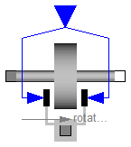
This component models a brake, i.e., a component where a frictional torque is acting between the housing and a flange and a controlled normal force presses the flange to the housing in order to increase friction. The normal force fn has to be provided as input signal u in a normalized form, fn = fn_max*u, where fn_max has to be provided as parameter. Friction in the brake is modelled in the following way:
When the absolute angular velocity "w" is not zero, the friction torque is a function of the velocity dependent friction coefficient mue(w) , of the normal force "fn", and of a geometry constant "cgeo" which takes into account the geometry of the device and the assumptions on the friction distributions:
frictional_torque = cgeo * mue(w) * fn
Typical values of coefficients of friction:
dry operation : mue = 0.2 .. 0.4
operating in oil: mue = 0.05 .. 0.1
When plates are pressed together, where ri is the inner radius, ro is the outer radius and N is the number of friction interfaces, the geometry constant is calculated in the following way under the assumption of a uniform rate of wear at the interfaces:
cgeo = N*(r0 + ri)/2
The positive part of the friction characteristic mue(w), w >= 0, is defined via table mue_pos (first column = w, second column = mue). Currently, only linear interpolation in the table is supported.
When the absolute angular velocity becomes zero, the elements connected by the friction element become stuck, i.e., the absolute angle remains constant. In this phase the friction torque is calculated from a torque balance due to the requirement, that the absolute acceleration shall be zero. The elements begin to slide when the friction torque exceeds a threshold value, called the maximum static friction torque, computed via:
frictional_torque = peak * cgeo * mue(w=0) * fn (peak >= 1)
This procedure is implemented in a "clean" way by state events and leads to continuous/discrete systems of equations if friction elements are dynamically coupled. The method is described in:
More precise friction models take into account the elasticity of the material when the two elements are "stuck", as well as other effects, like hysteresis. This has the advantage that the friction element can be completely described by a differential equation without events. The drawback is that the system becomes stiff (about 10-20 times slower simulation) and that more material constants have to be supplied which requires more sophisticated identification. For more details, see the following references, especially (Armstrong and Canudas de Witt 1996):
Release Notes:
| Name | Default | Description |
|---|---|---|
| mue_pos[:, :] | [0, 0.5] | [w,mue] positive sliding friction coefficient (w_rel>=0) |
| peak | 1 | peak*mue_pos[1,2] = maximum value of mue for w_rel==0 |
| cgeo | 1 | Geometry constant containing friction distribution assumption |
| fn_max | 1 | Maximum normal force [N] |
| w_small | 1 | Relative angular velocity near to zero (see model info text) [rad/s] |
model Brake "Brake based on Coulomb friction "
extends Interfaces.TwoFlangesAndBearing;
parameter Real mue_pos[:, :]=[0, 0.5]
"[w,mue] positive sliding friction coefficient (w_rel>=0)";
parameter Real peak(final min=1) = 1
"peak*mue_pos[1,2] = maximum value of mue for w_rel==0";
parameter Real cgeo(final min=0) = 1
"Geometry constant containing friction distribution assumption";
parameter SI.Force fn_max( final min=0) = 1 "Maximum normal force";
extends Interfaces.FrictionBase;
SI.Angle phi;
SI.AngularVelocity w "Absolute angular velocity of flange_a and flange_b";
SI.AngularAcceleration a
"Absolute angular acceleration of flange_a and flange_b";
Real mue0 "Friction coefficient for w=0 and forward sliding";
SI.Force fn "Normal force (=fn_max*inPort.signal)";
// Constant auxiliary variable
Modelica.Blocks.Interfaces.InPort inPort(
final n=1)
"Normalized force signal (= normal_force/fn_max; brake is active if > 0)";
equation
mue0 = Modelica.Math.tempInterpol1(0, mue_pos, 2);
phi = phi_a;
phi = phi_b;
// Angular velocity and angular acceleration of flanges flange_a and flange_b
w = der(phi);
a = der(w);
w_relfric = w;
a_relfric = a;
// Torque equilibrium, normal force and friction torque for w_rel=0
0 = flange_a.tau + flange_b.tau - tau;
fn = fn_max*inPort.signal[1];
tau0 = mue0*cgeo*fn;
tau0_max = peak*tau0;
free = fn <= 0;
// friction torque
tau = if locked then sa else if free then 0 else cgeo*fn*(if startForward then
Modelica.Math.tempInterpol1(w, mue_pos, 2) else if startBackward then
-Modelica.Math.tempInterpol1(-w, mue_pos, 2) else if pre(mode) ==
Forward then Modelica.Math.tempInterpol1(w, mue_pos, 2) else -
Modelica.Math.tempInterpol1(-w, mue_pos, 2));
end Brake;

This component models the gear ratio and the losses of a standard gear box in a reliable way including the stuck phases that may occur at zero speed. The gear boxes that can be handeled are fixed in the ground, have one input and one output shaft, and are essentially described by the equations:
flange_a.phi = i*flange_b.phi (-flange_b.tau) = i*(eta_mf*flange_a.tau - tau_bf)
where
The loss terms "eta_mf" and "tau_bf" are functions of the absolute value of the input shaft speed w_a and of the energy flow direction. They are defined by parameter lossTable[:,5] where the columns of this table have the following meaning:
| |w_a| | eta_mf1 | eta_mf2 | |tau_bf1| | |tau_bf2| |
| ... | ... | ... | ... | ... |
| ... | ... | ... | ... | ... |
with
| |w_a| | Absolute value of angular velocity of input shaft flange_a |
| eta_mf1 | Mesh efficiency in case of input shaft driving |
| eta_mf2 | Mesh efficiency in case of output shaft driving |
| |tau_bf1| | Absolute bearing friction torque in case of input shaft driving |
| |tau_bf2| | Absolute bearing friction torque in case of output shaft driving |
With these variables, the mesh efficiency and the bearing friction are formally defined as:
if flange_a.tau*w_a > 0 or flange_a.tau==0 and w_a > 0 then
eta_mf := eta_mf1
tau_bf := tau_bf1
elseif flange_a.tau*w_a < 0 or flange_a.tau==0 and w_a < 0 then
eta_mf := 1/eta_mf2
tau_bf := tau_bf2
else // w_a == 0
eta_mf and tau_bf are computed such that der(w_a) = 0
end if;
Note, that the losses are modeled in a physically meaningful way taking into account that at zero speed the movement may be locked due to the friction in the gear teeth and/or in the bearings. Due to this important property, this component can be used in situations where the combination of the components Modelica.Mechanics.Rotational.IdealGear and Modelica.Mechanics.Rotational.GearEfficiency will fail because, e.g., chattering occurs when using the Modelica.Mechanics.Rotational.GearEfficiency model.
Acknowledgement: The essential idea to model efficiency in this way is from Christoph Pelchen, ZF Friedrichshafen.
For detailed information:
Pelchen C., Schweiger C., and Otter M.: "Modeling and Simulating the Efficiency of Gearboxes and of Planetary Gearboxes," in Proceedings of the 2nd International Modelica Conference, Oberpfaffenhofen, Germany, pp. 257-266, The Modelica Association and Institute of Robotics and Mechatronics, Deutsches Zentrum für Luft- und Raumfahrt e. V., March 18-19, 2002.
| Name | Default | Description |
|---|---|---|
| i | 1 | Transmission ratio (flange_a.phi/flange_b.phi) |
| lossTable[:, 5] | [0, 1, 1, 0, 0] | Array for mesh efficiencies and bearing friction depending on speed |
model LossyGear
"Gear with mesh efficiency and bearing friction (stuck/rolling possible)"
extends Interfaces.TwoFlangesAndBearing;
parameter Real i=1 "Transmission ratio (flange_a.phi/flange_b.phi)";
parameter Real lossTable[:, 5]=[0, 1, 1, 0, 0]
"Array for mesh efficiencies and bearing friction depending on speed";
Real sa "path parameter for acceleration and torque loss";
SI.AngularVelocity w_a "angular velocity of flange_a";
SI.AngularAcceleration a_a "angular acceleration of flange_a";
Real interpolation_result[1, size(lossTable, 2) - 1];
Real eta_mf1;
Real eta_mf2;
Real tau_bf1;
Real tau_bf2;
Real quadrant1;
Real quadrant2;
Real quadrant3;
Real quadrant4;
SI.Torque tauLoss
"Torque loss due to friction in the gear teeth and in the bearings";
SI.Torque tauLossMax "Torque loss for positive speed";
SI.Torque tauLossMin "Torque loss for negative speed";
Boolean tau_aPos "true, if torque of flange_a is not negative";
Boolean startForward "true, if starting to roll forward";
Boolean startBackward "true, if starting to roll backward";
Boolean locked "true, if gear is locked";
Boolean ideal "true, if losses are neglected";
constant Integer Unknown=3 "Value of mode is not known";
constant Integer Free=2 "Element is not active";
constant Integer Forward=1 "w_a > 0 (forward rolling)";
constant Integer Stuck=0
"w_a = 0 (forward rolling, locked or backward rolling)";
constant Integer Backward=-1 "w_a < 0 (backward rolling)";
Integer mode(
final min=Backward,
final max=Unknown,
start=Free,
fixed=true);
protected
function equal "Compare whether two Real matrices are identical"
extends Modelica.Icons.Function;
input Real A[:, :];
input Real B[:, :];
input Real eps=Modelica.Constants.eps
"two numbers r1, r2 are identical if abs(r1-r2) <= eps";
output Boolean result;
algorithm
result := false;
if size(A, 1) == size(B, 1) and size(A, 2) == size(B, 2) then
result := true;
for i in 1:size(A, 1) loop
for j in 1:size(A, 2) loop
if abs(A[i, j] - B[i, j]) >= eps then
result := false;
end if;
end for;
end for;
end if;
end equal;
equation
assert(abs(i) > 0,
"Error in initialization of LossyGear: i may not be zero");
ideal = equal(lossTable, [0, 1, 1, 0, 0]);
interpolation_result = if ideal then [1, 1, 0, 0] else
Modelica.Math.tempInterpol2(noEvent(abs(w_a)), lossTable, {2,3,4,5});
eta_mf1 = interpolation_result[1, 1];
eta_mf2 = interpolation_result[1, 2];
tau_bf1 = noEvent(abs(interpolation_result[1, 3]));
tau_bf2 = noEvent(abs(interpolation_result[1, 4]));
phi_a = i*phi_b;
// Torque balance (no inertias)
0 = flange_b.tau + i*(flange_a.tau - tauLoss);
// Speed for friction element
w_a = der(phi_a);
a_a = der(w_a);
quadrant1 = (1 - eta_mf1)*flange_a.tau + tau_bf1;
quadrant2 = (1 - 1/eta_mf2)*flange_a.tau + tau_bf2;
quadrant4 = (1 - 1/eta_mf2)*flange_a.tau - tau_bf2;
quadrant3 = (1 - eta_mf1)*flange_a.tau - tau_bf1;
// Torque Losses
tau_aPos = ideal or (flange_a.tau >= 0);
tauLossMax = if tau_aPos then quadrant1 else quadrant2;
tauLossMin = if tau_aPos then quadrant4 else quadrant3;
// Determine rolling/stuck mode when w_rel = 0
startForward = pre(mode) == Stuck and sa > tauLossMax or initial() and w_a
> 0;
startBackward = pre(mode) == Stuck and sa < tauLossMin or initial() and w_a
< 0;
locked = not (ideal or pre(mode) == Forward or startForward or pre(mode)
== Backward or startBackward);
/* Parameterized curve description a_a = f1(sa), tauLoss = f2(sa)
In comparison to Modelica.Mechanics.Rotational.FrictionBase it is possible
to simplify the following expression as mode == Stuck is assured in case
of startForward or startBackward */
tauLoss = if ideal then 0 else (if locked then sa else (if (startForward or
pre(mode) == Forward) then tauLossMax else tauLossMin));
a_a = if locked then 0 else sa - tauLoss;
/* Finite state machine to fix configuration after the computation above
The above equations are only dependent on pre(mode) and not on the actual
value of mode. This prevents loops. So mode can be determined in one step. */
mode = if ideal then Free else (if (pre(mode) == Forward or startForward)
and w_a > 0 then Forward else if (pre(mode) == Backward or startBackward)
and w_a < 0 then Backward else Stuck);
end LossyGear;
Modelica.Mechanics.Rotational.GearEfficiency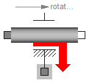
THIS COMPONENT IS OBSOLETE and should no longer be used. It is only kept for backward compatibility purposes. Use model Modelica.Mechanics.Rotational.LossyGear instead which implements gear efficiency in a much more reliable way.
This component consists of two rigidly connected flanges flange_a and flange_b without inertia where an efficency coefficient eta reduces the driven torque as function of the driving torque depending on the direction of the energy flow, i.e., energy is always lost. This can be seen as a simple model of the Coulomb friction acting between the teeth of a gearbox.
Note, that most gearbox manufacturers provide tables of the efficiency of a gearbox as function of the angular velocity (efficiency becomes zero, if the angular velocity is zero). However, such a table is practically useless for simulation purposes, because in gearboxes always two types of friction is present: (1) Friction in the bearings and (2) friction between the teeth of the gear. (1) leads to a velocity dependent, additive loss-torque, whereas (2) leads to a torque-dependent reduction of the driving torque. The gearbox manufacturers measure both effects together and determine the gear efficiency from it, although for simulation purposes the two effects need to be separated. Assume for example that only constant bearing friction, i.e., bearingTorque=const., is present, i.e.,
(1) loadTorque = motorTorque - sign(w)*bearingTorque
Gearbox manufacturers use the loss-formula
(2) loadTorque = eta*motorTorque
Comparing (1) and (2) gives a formulat for the efficiency eta:
eta = (1 - sign(w)*bearingTorque/motorTorque)
When the motorTorque becomes smaller as the bearingTorque, (2) is useless, because the efficiency is zero. To summarize, be careful to determine the gear efficiency of this element from tables of the gear manufacturers.
Release Notes:
| Name | Default | Description |
|---|---|---|
| eta | 1 | Efficiency |
model GearEfficiency
"Obsolete component (use model LossyGear instead)"
extends Interfaces.TwoFlangesAndBearing;
parameter Real eta(
min=Modelica.Constants.small,
max=1) = 1 "Efficiency";
SI.Angle phi;
SI.Power power_a "Energy flowing into flange_a (= power)";
Boolean driving_a
"True, if energy is flowing INTO and not out of flange flange_a";
equation
phi = phi_a;
phi = phi_b;
power_a = flange_a.tau*der(phi);
driving_a = power_a >= 0;
flange_b.tau = -(if driving_a then eta*flange_a.tau else flange_a.tau/eta);
end GearEfficiency;
Modelica.Mechanics.Rotational.Gear

This component models the essential effects of a gearbox, in particular gear efficiency due to friction between the teeth, bearing friction, gear elasticity and damping, backlash. The inertia of the gear wheels is not modeled. If necessary, inertia has to be taken into account by connecting components of model Inertia to the left and/or the right flange.
Release Notes:
| Name | Default | Description |
|---|---|---|
| ratio | 1 | transmission ratio (flange_a.phi/flange_b.phi) |
| eta | 1 | Gear efficiency |
| friction_pos[:, :] | [0, 1] | [w,tau] positive sliding friction characteristic (w>=0) |
| peak | 1 | peak*friction_pos[1,2] = maximum friction torque at zero velocity |
| c | 1.e5 | Gear elasticity (spring constant) [N.m/rad] |
| d | 0 | (relative) gear damping [N.m.s/rad] |
| b | 0 | Total backlash [rad] |
model Gear "Realistic model of a gearbox"
extends Interfaces.TwoFlangesAndBearingH;
parameter Real ratio=1 "transmission ratio (flange_a.phi/flange_b.phi)";
parameter Real eta(
min=Modelica.Constants.small,
max=1) = 1 "Gear efficiency";
parameter Real friction_pos[:, :]=[0, 1]
"[w,tau] positive sliding friction characteristic (w>=0)";
parameter Real peak(final min=1) = 1
"peak*friction_pos[1,2] = maximum friction torque at zero velocity";
parameter Real c(
final unit="N.m/rad",
final min=Modelica.Constants.small) = 1.e5
"Gear elasticity (spring constant)";
parameter Real d(
final unit="N.m.s/rad",
final min=0) = 0 "(relative) gear damping";
parameter SI.Angle b( final min=0) = 0 "Total backlash";
IdealGear gearRatio(
final ratio=ratio);
GearEfficiency gearEfficiency(
final eta=eta);
ElastoBacklash elastoBacklash(
final b=b,
final c=c,
final phi_rel0=0,
final d=d);
BearingFriction bearingFriction(
final tau_pos=friction_pos, final peak=peak);
equation
connect(flange_a, gearRatio.flange_a);
connect(gearRatio.flange_b, gearEfficiency.flange_a);
connect(gearEfficiency.flange_b, bearingFriction.flange_a);
connect(bearingFriction.flange_b, elastoBacklash.flange_a);
connect(elastoBacklash.flange_b, flange_b);
connect(gearRatio.bearing, adapter.flange_b);
connect(gearEfficiency.bearing, adapter.flange_b);
connect(bearingFriction.bearing, adapter.flange_b);
end Gear;
Modelica.Mechanics.Rotational.Gear2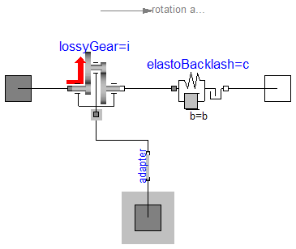
This component models the essential effects of a gearbox, in particular
The inertia of the gear wheels is not modeled. If necessary, inertia has to be taken into account by connecting components of model Inertia to the left and/or the right flange of component GearNew.
Release Notes:
| Name | Default | Description |
|---|---|---|
| i | 1 | transmission ratio (flange_a.phi/flange_b.phi) |
| lossTable[:, 5] | [0, 1, 1, 0, 0] | Array for mesh efficiencies and bearing friction depending on speed (see docu of LossyGear) |
| c | 1.e5 | Gear elasticity (spring constant) [N.m/rad] |
| d | 0 | (relative) gear damping [N.m.s/rad] |
| b | 0 | Total backlash [rad] |
model Gear2 "Realistic model of a gearbox (based on LossyGear)"
extends Interfaces.TwoFlangesAndBearingH;
parameter Real i=1 "transmission ratio (flange_a.phi/flange_b.phi)";
parameter Real lossTable[:, 5]=[0, 1, 1, 0, 0]
"Array for mesh efficiencies and bearing friction depending on speed (see docu of LossyGear)";
parameter Real c(
final unit="N.m/rad",
final min=Modelica.Constants.small) = 1.e5
"Gear elasticity (spring constant)";
parameter Real d(
final unit="N.m.s/rad",
final min=0) = 0 "(relative) gear damping";
parameter SI.Angle b( final min=0) = 0 "Total backlash";
LossyGear lossyGear(
final i=i, final lossTable=lossTable);
ElastoBacklash elastoBacklash(
final b=b,
final c=c,
final phi_rel0=0,
final d=d);
equation
connect(flange_a, lossyGear.flange_a);
connect(lossyGear.flange_b, elastoBacklash.flange_a);
connect(elastoBacklash.flange_b, flange_b);
connect(lossyGear.bearing, adapter.flange_b);
end Gear2;
Modelica.Mechanics.Rotational.Position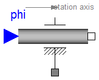
The input signal inPort.signal[1] defines the reference angle phi_ref(t) in [rad]. Flange flange_b is forced to move according to this reference motion. According to parameter exact (default = false), this is done in the following way:
The input signal can be provided from one of the signal generator blocks of the block library Modelica.Blocks.Sources.
Release Notes:
| Name | Default | Description |
|---|---|---|
| exact | false | true/false exact treatment/filtering the input signal |
| f_crit | 50 | if exact=false, critical frequency of filter to filter input signal [Hz] |
model Position
"Forced movement of a flange according to a reference angle signal"
parameter Boolean exact=false
"true/false exact treatment/filtering the input signal";
parameter SI.Frequency f_crit = 50
"if exact=false, critical frequency of filter to filter input signal";
output SI.Angle phi_ref "reference angle defined with the input signal";
output SI.Angle phi "absolute rotation angle of flange flange_b";
output SI.AngularVelocity w "absolute angular velocity of flange flange_b";
output SI.AngularAcceleration a
"absolute angular acceleration of flange flange_b";
SI.Torque tau_support "Support torque";
protected
parameter Real w_crit=2*Modelica.Constants.pi*f_crit
"critical frequency in [1/s]";
constant Real af=1.3617 "s coefficient of Bessel filter";
constant Real bf=0.6180 "s*s coefficient of Bessel filter";
public
Interfaces.Flange_b flange_b;
Modelica.Blocks.Interfaces.InPort inPort(
final n=1)
"Flange angle as input signal";
Interfaces.Flange_a bearing;
equation
0 = flange_b.tau + tau_support;
if cardinality(bearing) == 0 then
bearing.phi = 0;
else
bearing.tau = tau_support;
end if;
phi_ref = inPort.signal[1];
phi = flange_b.phi;
w = der(phi);
a = der(w);
if exact then
phi = phi_ref;
else
// Filter: a = phi_ref/(1 + (af/w_crit)*s + (bf/w_crit^2)*s^2)
a = ((phi_ref - phi)*w_crit - af*w)*(w_crit/bf);
end if;
initial equation
if not exact then
phi = phi_ref;
end if;
end Position;
Modelica.Mechanics.Rotational.Speed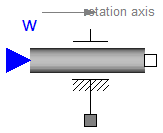
The input signal inPort.signal[1] defines the reference angle phi_ref(t) in [rad]. Flange flange_b is forced to move according to this reference motion. According to parameter exact (default = false), this is done in the following way:
The input signal can be provided from one of the signal generator blocks of the block library Modelica.Blocks.Sources.
Release Notes:
| Name | Default | Description |
|---|---|---|
| exact | false | true/false exact treatment/filtering the input signal |
| f_crit | 50 | if exact=false, critical frequency of filter to filter input signal [Hz] |
model Speed
"Forced movement of a flange according to a reference angular velocity signal"
parameter Boolean exact=false
"true/false exact treatment/filtering the input signal";
parameter SI.Frequency f_crit = 50
"if exact=false, critical frequency of filter to filter input signal";
SI.Angle w_ref "reference angular velocity defined with the input signal";
SI.Angle phi_ref
"reference angle defined by time integration of input signal";
SI.Angle phi "absolute rotation angle of flange flange_b";
SI.AngularVelocity w "absolute angular velocity of flange flange_b";
SI.AngularAcceleration a
"absolute angular acceleration of flange flange_b";
SI.Torque tau_support "Support torque";
protected
parameter Real w_crit=2*Constants.pi*f_crit "critical frequency in [1/s]";
constant Real af=1.3617 "s coefficient of Bessel filter";
constant Real bf=0.6180 "s*s coefficient of Bessel filter";
public
Interfaces.Flange_b flange_b;
Blocks.Interfaces.InPort inPort(
final n=1) "Flange angle as input signal";
Interfaces.Flange_a bearing;
equation
0 = flange_b.tau + tau_support;
if cardinality(bearing) == 0 then
bearing.phi = 0;
else
bearing.tau = tau_support;
end if;
der(phi_ref) = w_ref;
w_ref = inPort.signal[1];
phi = flange_b.phi;
w = der(phi);
a = der(w);
if exact then
w = w_ref;
else
// Filter: a = phi_ref/(1 + (af/w_crit)*s + (bf/w_crit^2)*s^2)
a = ((phi_ref - phi)*w_crit - af*w)*(w_crit/bf);
end if;
initial equation
if not exact then
w = w_ref;
end if;
end Speed;
The input signal inPort.signal[1] defines an angular acceleration a in [rad/s2]. Flange flange_b is forced to move with this acceleration. The angular velocity w and the rotation angle phi of the flange are automatically determined by integration of the acceleration.
The input signal can be provided from one of the signal generator blocks of the block library Modelica.Blocks.Sources.
Release Notes:
| Name | Default | Description |
|---|---|---|
| phi_start | 0 | Start angle [rad] |
| w_start | 0 | Start angular velocity [rad/s] |
model Accelerate
"Forced movement of a flange according to an acceleration signal"
parameter SI.Angle phi_start = 0 "Start angle";
parameter SI.AngularVelocity w_start = 0 "Start angular velocity";
SI.Angle phi(
final start=phi_start, final fixed=true)
"absolute rotation angle of flange flange_b";
SI.AngularVelocity w(
final start=w_start, final fixed=true)
"absolute angular velocity of flange flange_b";
SI.AngularAcceleration a
"absolute angular acceleration of flange flange_b";
SI.Torque tau_support "Support torque";
Interfaces.Flange_b flange_b;
Modelica.Blocks.Interfaces.InPort inPort(
final n=1)
"Angular acceleration as input signal";
Interfaces.Flange_a bearing;
equation
0 = flange_b.tau + tau_support;
if cardinality(bearing) == 0 then
bearing.phi = 0;
else
bearing.tau = tau_support;
end if;
phi = flange_b.phi;
w = der(phi);
a = der(w);
a = inPort.signal[1];
end Accelerate;
Modelica.Mechanics.Rotational.Move

Flange flange_b is forced to move with a predefined motion according to the input signals:
inPort.signal[1]: angle of flange
inPort.signal[2]: angular velocity of flange
inPort.signal[3]: angular acceleration of flange
The user has to guarantee that the input signals are consistent to each other, i.e., that inPort.signal[2] is the derivative of inPort.signal[1] and that inPort.signal[3] is the derivative of inPort.signal[2]. There are, however, also applications where by purpose these conditions do not hold. For example, if only the position dependent terms of a mechanical system shall be calculated, one may provide angle = angle(t) and set the angular velocity and the angular acceleration to zero.
The input signals can be provided from one of the signal generator blocks of the block library Modelica.Blocks.Sources.
Note, this model utilizes the non-standard function constrain(..) and assumes that this function is supported by the Modelica translator:
Real r[:], rd[:], rdd[:];
...
r = ..
rd = ...
rdd = ...
constrain(r,rd,rdd);
where r, rd and rdd are variables which need to be computed somewhere else. A simple implementation of constrain() is:
r = 0;
However, this implementation requires that r(t) is given as analytical, smooth function in order that it can be differentiated and it does not allow applications such as the one sketched above. Function constrain() is used to explicitly inform the Modelica translator that rd is the derivative of r and rdd is the derivative of rd and that all derivatives need to be identical to zero. The Modelica translator can utilize this information to use rd and rdd whenever the Pantelides algorithm requires to compute the derivatives of r (and takes rd and rdd instead of actually differentiating r).
Release Notes:
model Move
"Forced movement of a flange according to an angle, speed and angular acceleration signal"
SI.Angle phi "absolute rotation angle of flange flange_b";
SI.AngularVelocity w "absolute angular velocity of flange flange_b";
SI.AngularAcceleration a
"absolute angular acceleration of flange flange_b";
SI.Torque tau_support "Support torque";
Interfaces.Flange_b flange_b;
Modelica.Blocks.Interfaces.InPort inPort(
final n=3);
protected
Real constraintResidue;
Real constraintResidue_d;
Real constraintResidue_dd;
public
Interfaces.Flange_a bearing;
equation
0 = flange_b.tau + tau_support;
if cardinality(bearing) == 0 then
bearing.phi = 0;
else
bearing.tau = tau_support;
end if;
phi = flange_b.phi;
w = der(phi);
a = der(w);
constraintResidue = inPort.signal[1] - phi;
constraintResidue_d = inPort.signal[2] - w;
constraintResidue_dd = inPort.signal[3] - a;
constrain(constraintResidue, constraintResidue_d, constraintResidue_dd);
end Move;

The flange of a 1D rotational mechanical system is fixed at an angle phi0 in the housing. May be used:
Release Notes:
| Name | Default | Description |
|---|---|---|
| phi0 | 0 | Fixed offset angle of housing [rad] |
model Fixed "Flange fixed in housing at a given angle" parameter SI.Angle phi0 = 0 "Fixed offset angle of housing"; Interfaces.Flange_b flange_b "(right) flange fixed in housing"; equation flange_b.phi = phi0; end Fixed;
Modelica.Mechanics.Rotational.Torque

The input signal inPort.signal[1] defines an external torque tau in [Nm] which acts (with negative sign) at a flange connector, i.e., the component connected to this flange is driven by torque tau.
The input signal can be provided from one of the signal generator blocks of Modelica.Blocks.Sources.
Release Notes:
model Torque "Input signal acting as external torque on a flange"
SI.Torque tau "Torque (a positive value accelerates the flange)";
Modelica.Blocks.Interfaces.InPort inPort(
final n=1)
"Connector of input signal used as torque";
Interfaces.Flange_b flange_b "(Right) flange";
Interfaces.Flange_a bearing;
equation
tau = inPort.signal[1];
flange_b.tau = -tau;
if cardinality(bearing) == 0 then
bearing.phi = 0;
else
bearing.tau = tau;
end if;
end Torque;

The input signal inPort.signal[1] defines an external torque tau in [Nm] which acts at both flange connectors, i.e., the components connected to these flanges are driven by torque tau.
The input signal can be provided from one of the signal generator blocks of Modelica.Blocks.Sources.
Release Notes:
model Torque2 "Input signal acting as torque on two flanges"
extends Interfaces.TwoFlanges;
SI.Torque tau "Torque (a positive value accelerates the flange)";
Blocks.Interfaces.InPort inPort(
final n=1)
"Connector of input signal used as torque";
equation
tau = inPort.signal[1];
flange_a.tau = tau;
flange_b.tau = -tau;
end Torque2;
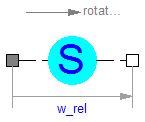
Usually, the absolute angle and the absolute angular velocity of Modelica.Mechanics.Rotational.Inertia models are used as state variables. In some circumstances, relative quantities are better suited, e.g., because it may be easier to supply initial values. In such cases, model RelativeStates allows the definition of state variables in the following way:
An example is given in the next figure

Here, the relative angle and the relative angular velocity between the two inertias are used as state variables. Additionally, the simulator selects either the absolute angle and absolute angular velocity of model inertia1 or of model inertia2 as state variables.
Release Notes:
model RelativeStates "Definition of relative state variables"
extends Interfaces.TwoFlanges;
SI.Angle phi_rel(
stateSelect=StateSelect.prefer)
"relative rotation angle used as state variable";
SI.AngularVelocity w_rel(
stateSelect=StateSelect.prefer)
"relative angular velocity used as state variable";
SI.AngularAcceleration a_rel "relative angular acceleration";
equation
phi_rel = flange_b.phi - flange_a.phi;
w_rel = der(phi_rel);
a_rel = der(w_rel);
flange_a.tau = 0;
flange_b.tau = 0;
end RelativeStates;